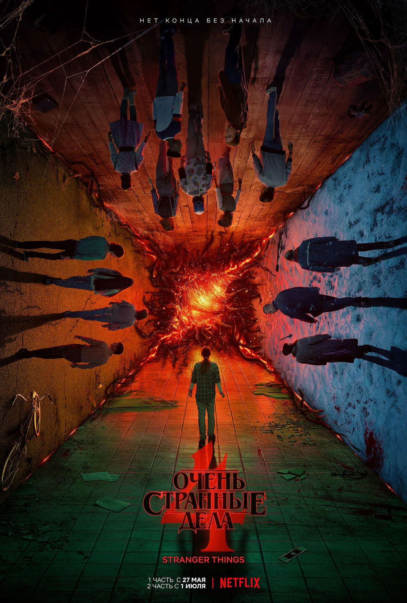

Очень странные дела
фантастика
триллер
драма
В маленьком городке Хоукинс пропадает мальчик, и его друзья сталкиваются с паранормальными явлениями, секретными экспериментами и существами из другого измерения. Сериал сочетает атмосферу 80-х, мистику и трогательные истории дружбы.
В ролях

Милли Бобби Браун
Одиннадцать

Финн Вулфард
Майк Уилер

Гейтен Матараццо
Дастин Хендерсон

Вайнона Райдер
Джойс Байерс
Отзывы

Денис М.
22.04.2024Очень атмосферный сериал! Люблю отсылки к 80-м и мистическую линию.

Светлана К.
20.04.2024Захватывающий сюжет, отличные герои и спецэффекты. Смотрю с удовольствием!
Похожие сериалы

Тьма

Локк и ключ